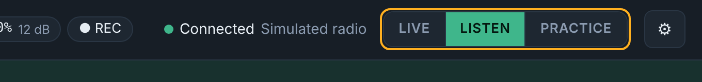
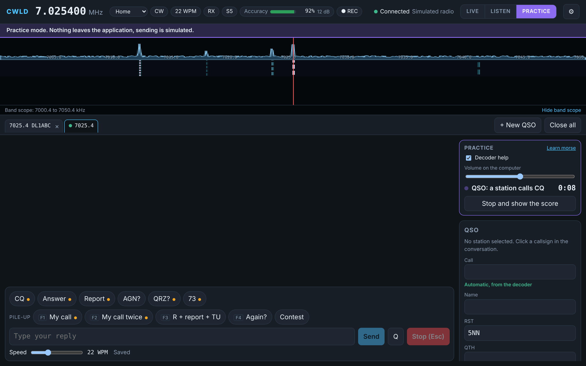

MModes
LIVE
The only mode that transmits. Always shown in red.
LISTEN
Receive and decode only. Safe for listening and testing.
PRACTICE
Simulated stations through your headphones. Nothing leaves your computer.

KKeys
| Key | What it does |
|---|---|
| Esc | Stop sending at once |
| Enter | Contest: send the right message for the moment (Run: CQ, exchange, AGN?, then TU and log) |
| Space | Contest: next field in the entry line |
| F1 to F8 | Contest: CQ (S&P: your call), exchange, TU and log, your call, his call, QSO B4, NR?, AGN |
| Ctrl+R | Contest: switch between Run and S&P |
| Ctrl+W | Contest: clear the entry line |
| Ctrl+F6, Ctrl+F7 | Contest: decoder Strongest and AFC |
?Questions
CWLD does not find the radio
Check that the radio is on and the cable carries data. Open Device Manager (right-click Start) and look under Ports (COM & LPT). Choose the first port in CWLD, and if there is no answer, the second one. Check that the CI-V address is B6.
The frequency on the screen does not follow the radio
Switch CI-V Transceive on in the radio: MENU, SET, Connectors, CI-V. CWLD also asks the radio for the frequency now and then, but Transceive makes it instant.
The waterfall is empty and nothing is decoded
In Settings, Audio, choose USB Audio CODEC and click Restart with these settings. Then check the three microphone privacy switches of Windows and turn audio enhancements off. Make sure the radio has a CW signal in its filter and that the AF level is not zero.
Windows or my antivirus blocks the installer
CWLD is not code signed yet, so Windows is careful. Click More info, then Run anyway. If an antivirus removes the file, compare its SHA-256 checksum with the one on the download section and allow the file.
Does CWLD transmit by itself?
No. Only the LIVE mode transmits, and only when you type, press a key or click a chip. Esc stops at once. LISTEN and PRACTICE never transmit.
Does my paddle still work?
Yes. The keyer of the radio works on its own and CWLD never blocks it.
Where is my data?
Everything stays on your computer. Settings and the logbook (logbook.db, with a backup copy at every start) are in %APPDATA%\io.github.on3vz.cwld. Recordings go to Documents\CWLD. Press Windows+R, paste the folder name and press Enter to open it.
How do I update?
Download the newest installer from the home page and run it over the old version. Your settings and logbook stay.
How do I get my QSOs into my logger?
Use the export function of the logbook. It writes an ADIF file, after a check window that lists errors and warnings. Import that file in Log4OM or any other logger.
CContest
Switch contest mode on and choose a contest profile. The entry line takes callsign, report, serial number and the extra field of the profile. The serial number goes up when you log, not when you send. A red DUPE shows the same call on the same band, and logging stays possible.
Test mode (orange) writes to a separate test log that never counts for dupes and never reaches the export.
PPortable
Choose the profile Home or Portable in the status bar. For an activation (WWFF/ONFF, POTA, SOTA) fill in the reference and the grid. Both are written into every QSO, and a check window before the ADIF export catches missing grids or bad references.
OPractice
PRACTICE decodes a simulated band and plays it on your computer. Nothing is transmitted, so turn the AF knob of the radio down. Choose an exercise, a speed range and a signal strength, and see your score at the end. Turn decoder help off to copy by ear.
